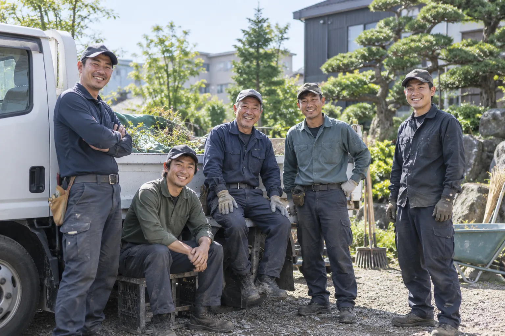
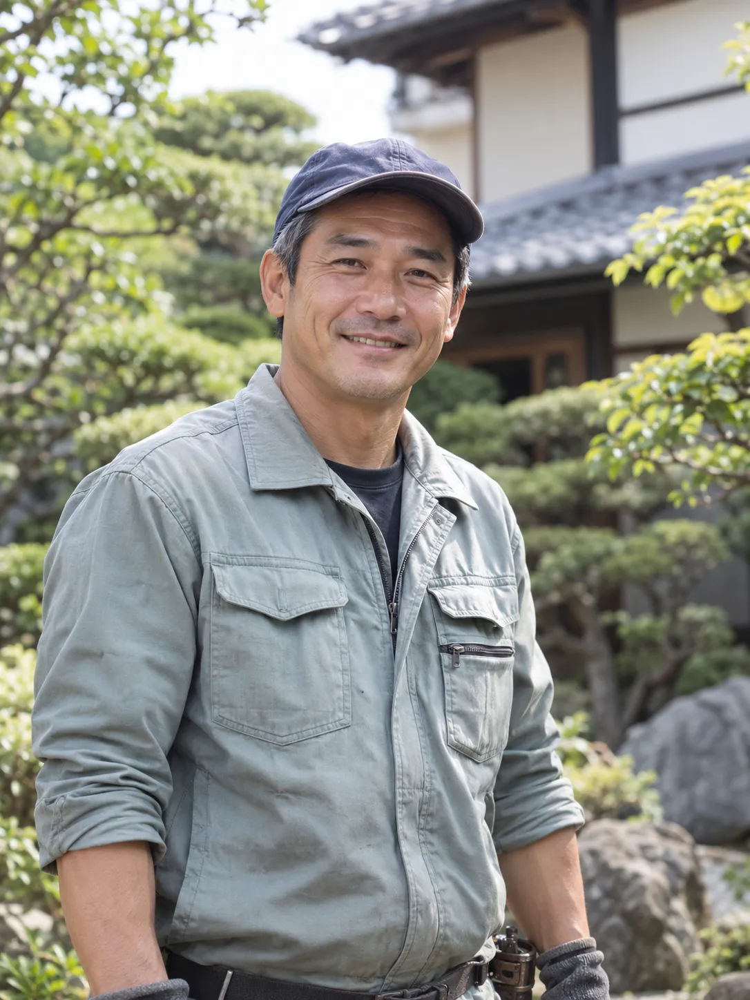
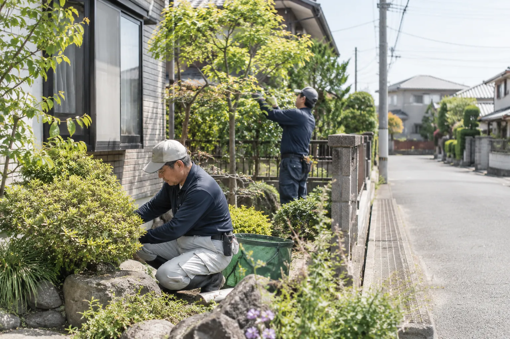
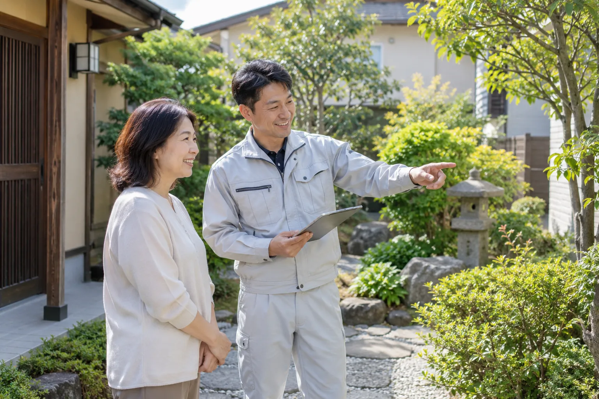
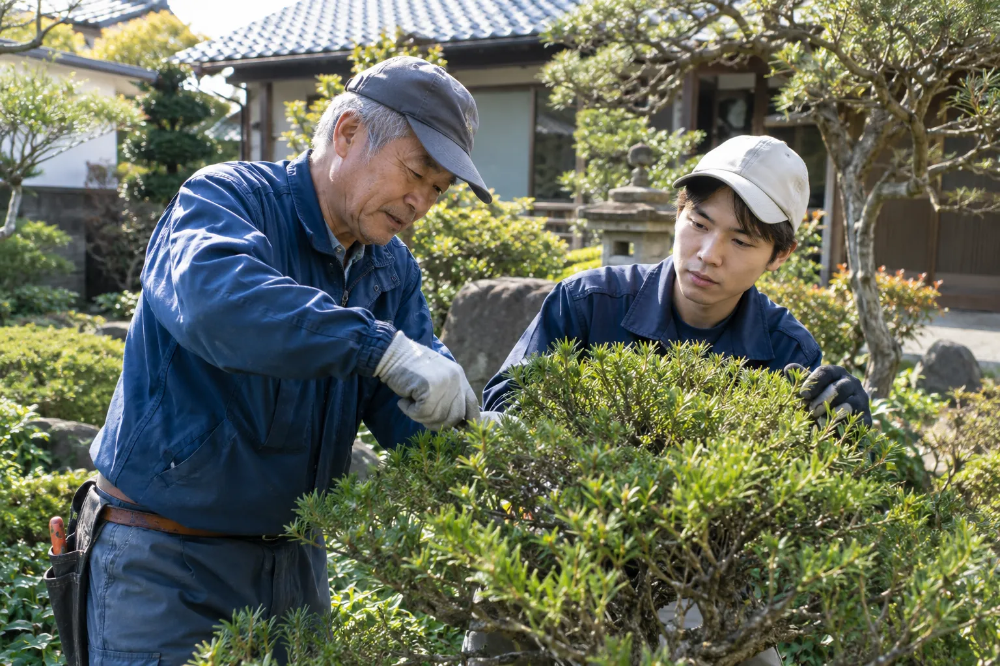
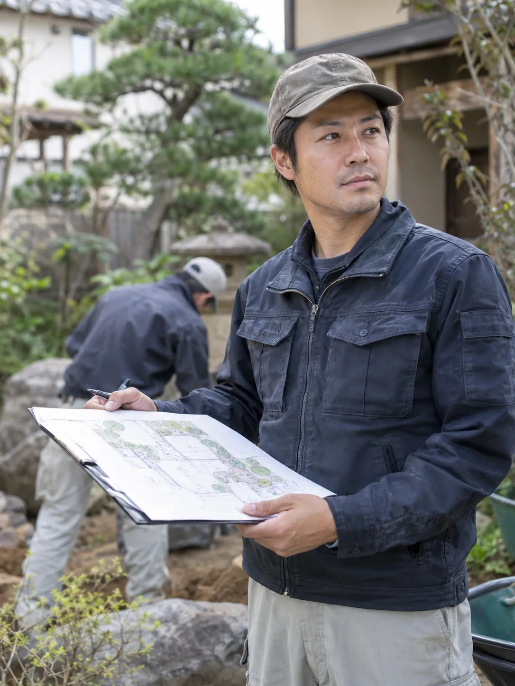
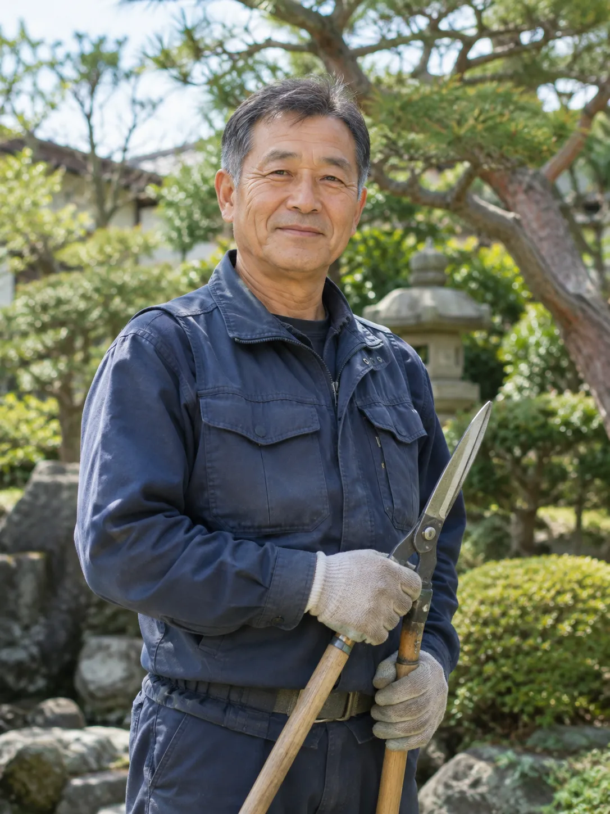
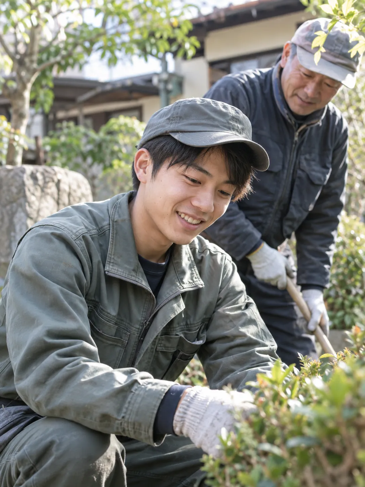

代表取締役
REPRESENTATIVE
創業以来、現場に立ち続けてきました。まずは庭を見せていただくところから、一緒に考えます。

北翠園は、札幌市を中心に、石狩市・江別市・北広島市など札幌近郊で、造園・庭園管理・外構工事を行う会社です。約20名のスタッフが在籍し、20代の若手から60代のベテランの職人まで、幅広い年代が一緒に働いています。
一般住宅の庭木1本の剪定から、庭全体のリフォーム、店舗・会社・マンション・医療・福祉施設などの植栽管理まで。個人のお客様にも、法人のお客様にも対応しています。
SINCE 1989
1989
1989年の創業から現在まで、地域のお客様に支えていただきながら仕事を続けてきました。紹介や昔からのお付き合いでのご依頼が多く、代替わりしても剪定に伺う庭があります。長く続いていることを、安心の目安にしていただければと思います。
Our Value
造園の仕事は、一度施工して終わりではありません。木は毎年育ち、庭も年月とともに変わっていきます。だからこそ私たちは、一度きりの工事ではなく、その後の剪定や管理まで長く続くお付き合いを大切にしています。
「去年もお願いしたから、今年もお願いします」「庭のことで何かあったら北翠園さんに相談する」——そう言っていただける関係でありたいと考えています。新しいお客様にも、長く付き合える会社だと感じていただけるよう、まずは庭を見せていただくところから丁寧に向き合います。
Message

創業以来、たくさんのお客様に支えていただきながら仕事を続けてきました。木は年々育ち、庭も少しずつ表情を変えていきます。
その変化をお客様と一緒に見ながら、長く庭を守れる会社でありたいと考えています。庭木1本のご相談からで大丈夫です。庭のことで困ったら、気軽に声をかけてください。
株式会社北翠園 代表取締役
Point

POINT 01
1989年の創業から、札幌の住宅街を中心に仕事をしてきました。ご依頼の多くは、紹介や昔からのお客様からのものです。

POINT 02
庭は手入れを続けてこそ保たれます。施工したあとのお付き合いを大切にし、10年以上になるお客様も少なくありません。

POINT 03
現場はベテランと若手が組んで入ります。できるだけ同じ顔ぶれで伺えるようにし、道具の使い方から近所への気配りまで受け継いでいます。
Staff
どんな人が庭に伺うのか、少しでも伝わるように。代表を含めて数名を紹介します。
REPRESENTATIVE
創業以来、現場に立ち続けてきました。まずは庭を見せていただくところから、一緒に考えます。

SITE MANAGER
お客様との打合せと現場の段取りを担当。ご要望と庭の状態をすり合わせながら進めます。

GARDENER
剪定歴30年。木の性質を見て、その後の育ち方まで考えた枝の整え方を心がけています。

GARDENER
先輩職人と現場をまわりながら修行中です。冬囲いや庭の手入れのご相談は、まず私が伺うことも多いです。
Community
特別な活動としてではなく、地域との日々のつながりを大切にしています。


急いで決める必要はありません。会社の雰囲気が伝わったら、庭木1本のことからでも気軽にお声がけください。
受付時間：平日・土 8:00〜18:00／日・祝休み